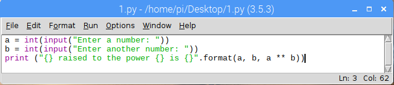
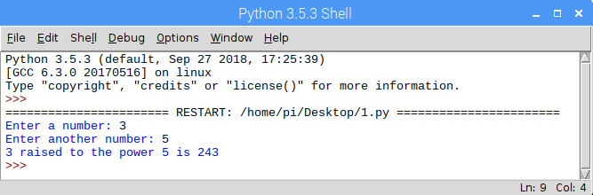
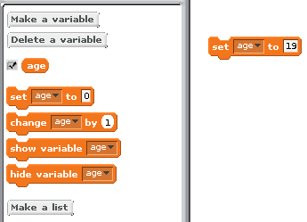
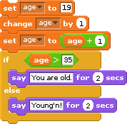
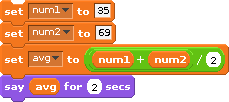
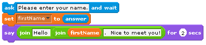
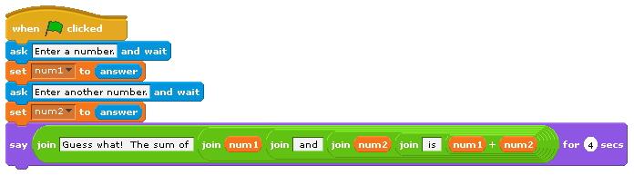

Python Primer
Open your IDE of choice (e.g. IDLE) and follow along with the professor as they try out different code snippets in the python shell. This activity should give you an idea of
the kinds of operators and expressions that are possible in the python shell.
how to execute print statements consisting of different kinds of data
how to prompt the user for some input in the middle of code execution
storing values in variables
using variables and the values stored within as part of other expressions.
You should be able to understand every single statement in the snippet below and even create a similar sequence on your own with a clear grasp of what each statement is doing.
a = 10
b = 15
print(f"{a} ^ {b} = {a**b}")
print(a + 6)
c = input("What is your name?")
print(f"Hello {c}")
d = input(f"so {c}, How old are you?")
e = int(d)
print(f"You are {e} years old and you will be 100 in {100-e} years")Creating Programs and Saving Files
So far, we have been entering statements in the Python shell. These statements have been interpreted, one at a time. If we were to close the Python shell, everything that we entered would be lost. In order to save Python programs, we must type them in a separate editor outside of the Python shell, save them in a file. Once this has been done, we can then execute them in the Python shell.
To create a new Python program, click on File | New File (or press Ctrl+N) in the Python shell. This brings up a new window (an editor that is a part of IDLE) in which we can type our program. Type the following program into this new window:
a = int(input("Enter a number: "))
b = int(input("Enter another number: "))
print(f"{a} raised to the power {b} is {a**b}")If you are using IDLE, this is what your window should look like.

Note that when editing a python file, there will NOT be any >>> symbols on the left of your lines of code. If you see those symbols, that means you are still within the shell and not in an actual python file.
Before we can run this program, it must be saved. Do so by clicking on File | Save (or press Ctrl+S). Give it an appropriate name, and save it to an appropriate location. Now it can be executed by clicking on Run | Run Module (or by pressing F5). This executes the program in the Python shell:

You can run your code any number of times by selecting Run | Run Module (or pressing F5). If your code requires some input from the user, each execution affords you an opportunity to try out different input options e.g. inputing different numbers to see what one raised to another is.
Reloading a saved file
To load a saved Python program, simply double-click on the saved file. This should bring up the IDLE editor with your file loaded in it. Sometimes, double-clicking on the file just opens it up in a notepad- like editor by default. To force it to open in IDLE, right-click the file instead, and select Open with IDLE.
The program can then be executed as before, by clicking on Run | Run Module (or by pressing F5). This will automatically open a Python shell and execute the program.
Write a python program that prompts the user for two numbers and displays the quotient and remainder when the first number is divided by the second. As an example, if the user typed in 17 and 3 for the first and second number respectively, it would output a result similar to the one shown below.
The quotient of 17 divided by 3 is 5 with a remainder of 2
Data types, constants, and variables
The kinds of values that can be expressed in a programming language are known as its data types
Recall that Scratch supports only two data types: text and numbers. Since Python is a general purpose programming language, it supports many more data types. Actually, it can support virtually any type that you can think of! That is, Python allows you to define your own type for use in whatever way you wish. Since this is user-defined, let’s focus on what are called primitive types for now.
The primitive types of a programming language are those data types that are built-in (or standard) to the language and typically considered as basic building blocks (i.e., more complex types can be created from these primitive types).
Python’s standard types can be grouped into several classes: numeric types, sequences, sets, and mappings. Although there are actually others, we will focus on these in the Living with Cyber curriculum.
Numeric types include whole numbers, floating point numbers, and complex numbers. Python has two whole number types: int and long. The int data type is a 64-bit integer. This means that 64 bits (i.e. a bit can be either 0 or 1) is used to represent a single whole number. For example the following series of bits represent a single integer (in fact it represents the number 846,251,337): 0000 0000 0000 0000 0000 0000 0000 0000 0011 0010 0111 0000 1100 0101 0100 1001. We will explore this in more detail at a later time. The long data type is an integer of unlimited length. This means Python will give us enough bits to store any number we want! Note that in Python 3.x, an int is an integer of unlimited length (there is no long data type). These integer types can represent negative or positive whole numbers. The float type is a 64-bit floating point (decimal) number. This means it can hold numbers like 3.14 and -90.3324235. Lastly, the complex type represents complex numbers (i.e., numbers with real and imaginary parts). Most of our programs will require only int and float.
So what does this all mean? We create variables that contain data of some data type. Knowing the data type of a variable is like knowing the superpowers of a person you can control. In this analogy, the superpowers of a data type are the methods and properties that can be leveraged for use in whatever program you are writing at the time. For example, one of the superpowers of the numeric data types is raising them to a power. To do that, we can use the function of the form pow(x,y). In this example, x and y are variables that are of type int or float. The pow function returns the value of the computation involving raising the value in x to the power of the value in y (i.e., xy ). This function would not typically be able to work for variables that aren’t numeric data types. You may recall that the same functionality can be implemented in Python as: x ** y. This effectively performs the same thing.
A constant is defined as a value of a particular type that does not change over time.
In Python (just as in Scratch), both numbers and text may be expressed as constants. Numeric constants are composed of the digits 0 through 9 and, optionally, a negative sign (for negative numbers), and a decimal point (for floating point numbers). For example, the number -3.14159 is a numeric constant in Python.
A text constant consists of a sequence of characters (also known as a string of characters – or just a string). The following are examples of valid string constants:
- “A man, a plan, a canal, Panama.”
- “Was it Eliot’s toilet I saw?”
- “There are 10 kinds of people in this world. Those who know binary, those who don’t, and those who didn’t know it was in base 3!”
Note that, unlike Scratch, Python requires the quotes surrounding text constants.
A variable is a named object that can store a value of a particular data type.
Recall that Scratch supports two types of variables: text variables and numeric variables. Moreover, before a variable can be used, its name must be declared. In many programming languages, both its name and type must be declared; however, both Scratch and Python only require a variable’s name to be declared before it is used. Here is an example of declaring and initializing a variable in Python compared to the process in Scratch.

age = 19Here are some examples that deal with variables and how they compare in Scratch and Python:

age = 19
age = age + 1
age = age + 1
if (age > 35):
print("You are old.")
else:
print("Young'n!")
num1 = 35
num2 = 69
avg = (num1 + num2) / 2.0
print(avg)In short, to declare variables in Python, we simply write a statement that assigns a value to a variable name. Note that, just as in Scratch, we can assign a value of a different type to a variable. For example:
var = 5
print(var)
var = 3.14159
print(var)
var = "Pi"
print(var)It is important to realize that, while human programmers generally try to give variables names that reflect the use to which they will be put, the variable name itself doesn’t mean anything to the computer. For example, the numeric variable age can be used to hold any number, not just an age. It is perfectly legal for age to hold the number of students in a class or the number of eggs in your refrigerator. The computer couldn’t care less. Human programmers, on the other hand, generally care a great deal. They expect a variable’s name to accurately reflect its purpose; so while it is possible to do so, it would be considered poor programming practice to use the variable age to store anything other than an age.
Input and Output
In order for a computer program to perform any useful work, it must be able to communicate with the outside world. The process of communicating with the outside world is known as input/output (or I/O). Most imperative languages include mechanisms for performing other kinds of I/O such as detecting where the mouse is pointing and accessing the contents of a disk drive.
The flexibility and power that input statements give programming languages cannot be overstated. Without them the only way to get a program to change its output would be to modify the program code itself, which is something that a typical user cannot be expected to do.
General-purpose programming languages allow human programmers to construct programs that do amazing things. When attempting to understand what a program does, however, it is vitally important to always keep in mind that the computer does not comprehend the meaning of the character strings it manipulates or the significance of the calculations it performs. Take, for example, the following simple Scratch program:

This program simply displays strings of characters, stores user input, and echoes that input back to the screen along with some additional character strings. The computer has no clue what the text string “Please enter your name:” means. For all it cares, the string could have been “My hovercraft is full of eels.” or “qwerty uiop asdf ghjkl;” (or any other text string for that matter). Its only concern is to copy the characters of the text string onto the display screen.
Only in the minds of human beings do the sequence of characters “Please enter your name:” take on meaning. If this seems odd, try to remember that comprehension does not even occur in the minds of all humans, only those who are capable of reading and understanding written English. A four year old, for example, would not know how to respond to this prompt because he or she would be unable to read it. This is so despite the fact that if you were to ask the child his or her name, he or she could immediately respond and perhaps even type it out on the keyboard for you.
Now consider this Scratch program:

Here, the input is numeric instead of text. The program prompts the user for two numbers, which it then computes the sum for and displays to the user. Note that two variables were declared: num1 and num2. The first number is captured and stored in the variable num1. The second number is captured and stored in the variable num2. What do you think would happen if the user did not provide numeric input and, for example, inputted “Bob” for the first number? In the real world, programmers must create robust programs that examine user input in order to verify that it is of the proper type before processing that input. If the input is found to be in error, the program must take appropriate corrective action, such as rejecting the invalid input and requesting the user try again.
In Python, output is implemented as a print statement:
print("This is some output!")We use the input statement to ask a question and obtain user input. In the same statement, we can assign the result of this to a variable:
age = int(input("How old are you? "))Of course, we need to take care to properly specify whether the input is numeric or text (in Python 3.x its a text by default. Use casting to convert into numeric).
Expressions and assignment
You’ve seen how to assign values to variables above using a simple assignment statement. For example:
name = "Shonda Lear"
age = 19
grade = 91.76
letter_grade = "A"These are all examples of assignment statements. In this configuration, the equal sign (=) functions as the assignment operator. Later, you will see how it can also be used to compare values or expressions.
An expression in a programming language is some combination of values (e.g., constants and variables) that are evaluated to produce some new value.
For example, a simple expression in Python is 1 + 2. The result of this expression is, of course, 3! Expressions usually take on the form of operand operator operand. In the previous example, the operator was + and the operands were 1 and 2. The operator + has a very well defined behavior on operands of numeric types: it simply adds them. On string types, it concatenates.
What do you think would happen if the operands are of two different types (e.g., numeric and string)? Try out the statements below and see if you can understand the output that you get.
print(1 + "one")
print("one" + 1)
print("1" + "1")
print(1 + "1")
print(1 + 1)
print("one" + str(1))
print(1 + int("1"))The activity above should have demonstrated that Python doesn’t know what it means to “add” a numeric type to a string type. Therefore, it results in an error: unsupported operand type(s). To “add” a string type to a numeric type, we must convert the numeric type to a string type via str. Then, Python understands that “adding” actually means concatenating two strings. It is interesting to note how Python handles “multiplying” a string type and a numeric type like this:
print("hello" * 5)It turns out that Python understands how to “multiply” both types by interpreting the * operator as concatenating a string type a number of times specified by a numeric type.
print("Baby Shark")
print("doo " * 6)Python has many different operators that perform a variety of operations on operands. These will be discussed later in this lesson.